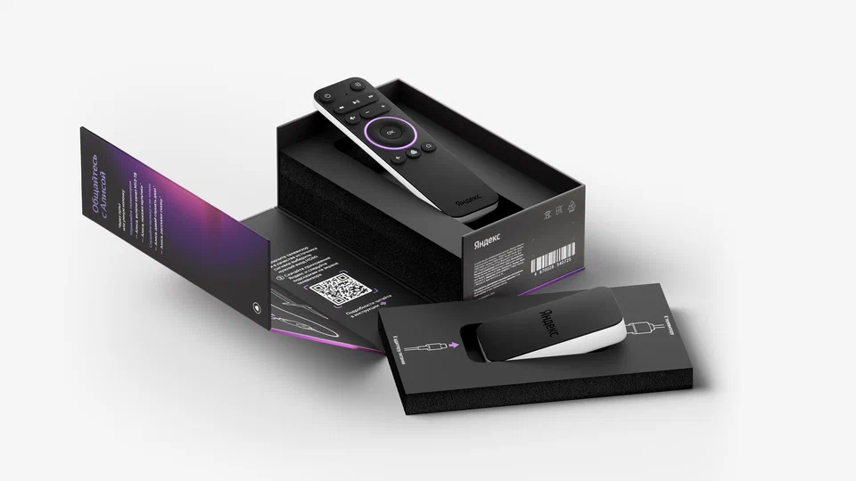

Блог команды
Как смотреть Кинопоиск на любом телевизоре? Рассказываем, зачем нужен Яндекс.Модуль

Удобная ТВ-приставка, которую можно взять с собой на дачу, в отпуск или в гости к родителям.
Хороший стриминговый сервис должен быть доступен на самых разных устройствах. Мы стремимся сделать так, чтобы вы могли смотреть Кинопоиск, где захотите, но, к сожалению, не можем покрыть сразу все платформы. Особенно это касается старых телевизоров, которые больше не поддерживаются их производителями: поставить туда приложение Кинопоиска просто невозможно.
При этом на свете полно отличных телевизоров без Smart TV. И очень обидно (и дорого!) менять устройство с хорошим экраном на новое только ради этих функций. Чтобы у вас была возможность смотреть Кинопоиск на любом телевизоре, мы разработали ТВ-приставку Яндекс.Модуль.